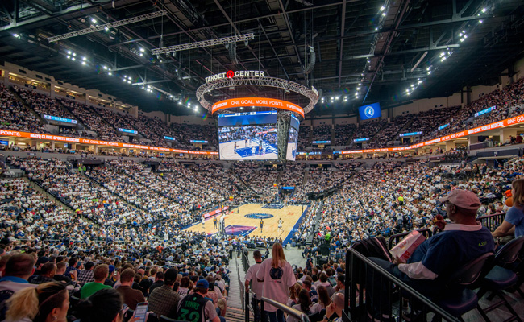

Arena
The Arena is also home to the women's professional basketball team, the Minnesota Lynx. It is also used for concerts and other events besides basketball. It features one of only two moveable floors in the country, being able to raise and lower the floor 5 feet to improve guest sight lines. You can take a tour of this arena that's fresh off a $150 MILLION renovation! Tours are offered on non-event days for $5 per guest and are approximately 1-1.5 hours in duration. Your tour guide will meet you at the Life Time Lobby and lead you around the facility through the Lexus Courtside Club, the event floor, backstage hallways, Treasure Island Resort & Casino Premium level, and more!